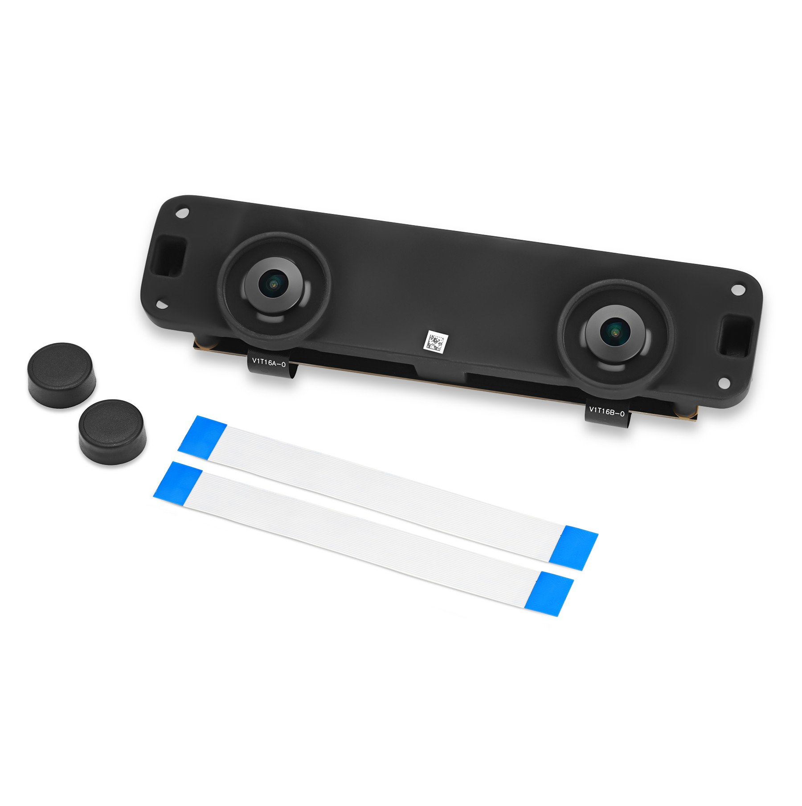
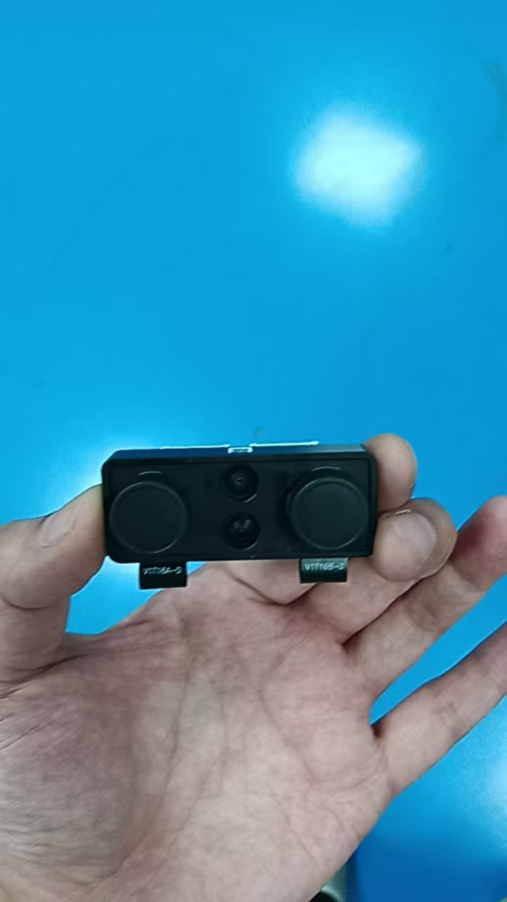
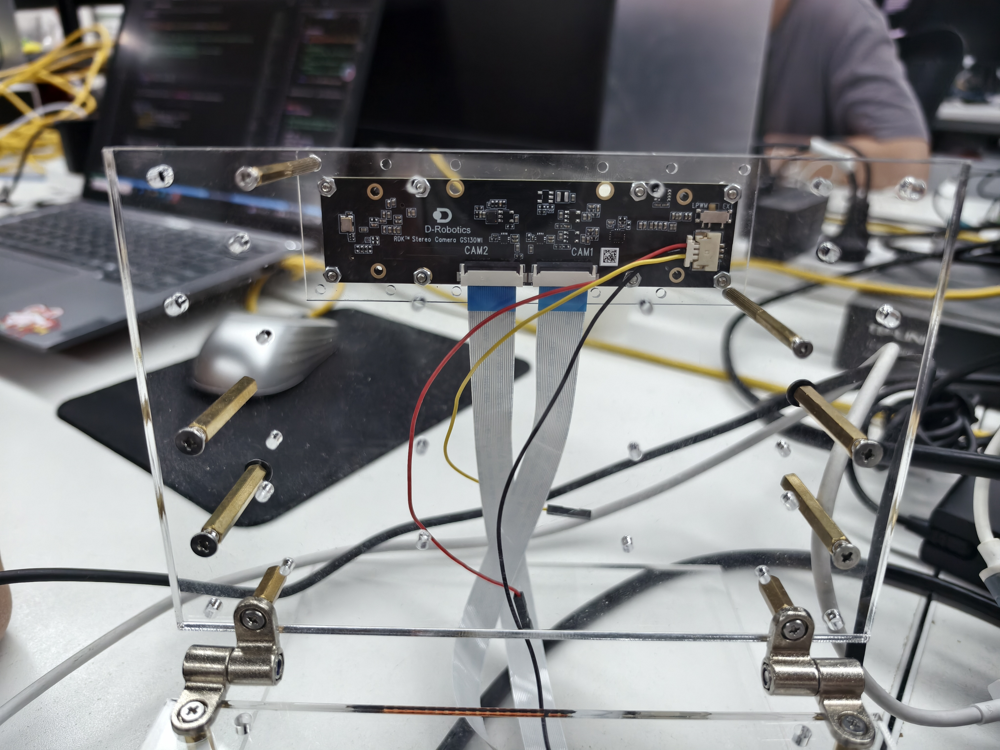
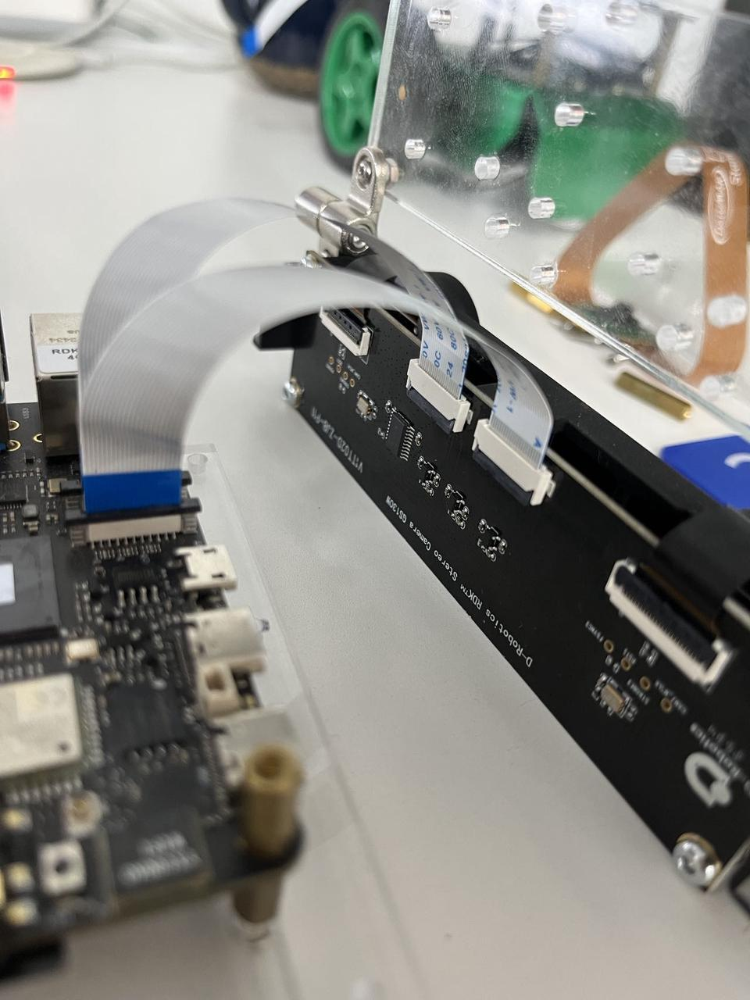
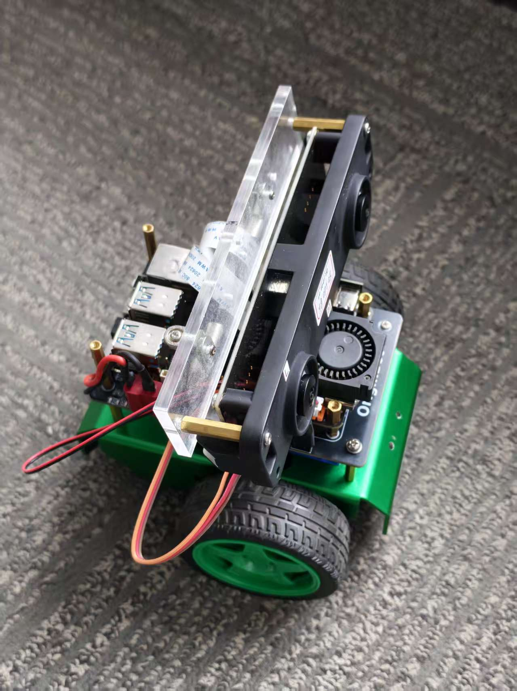
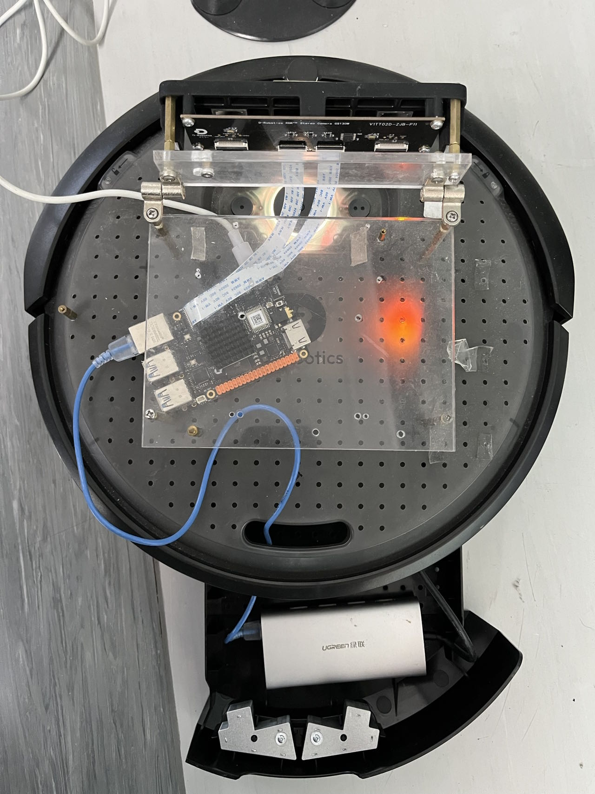
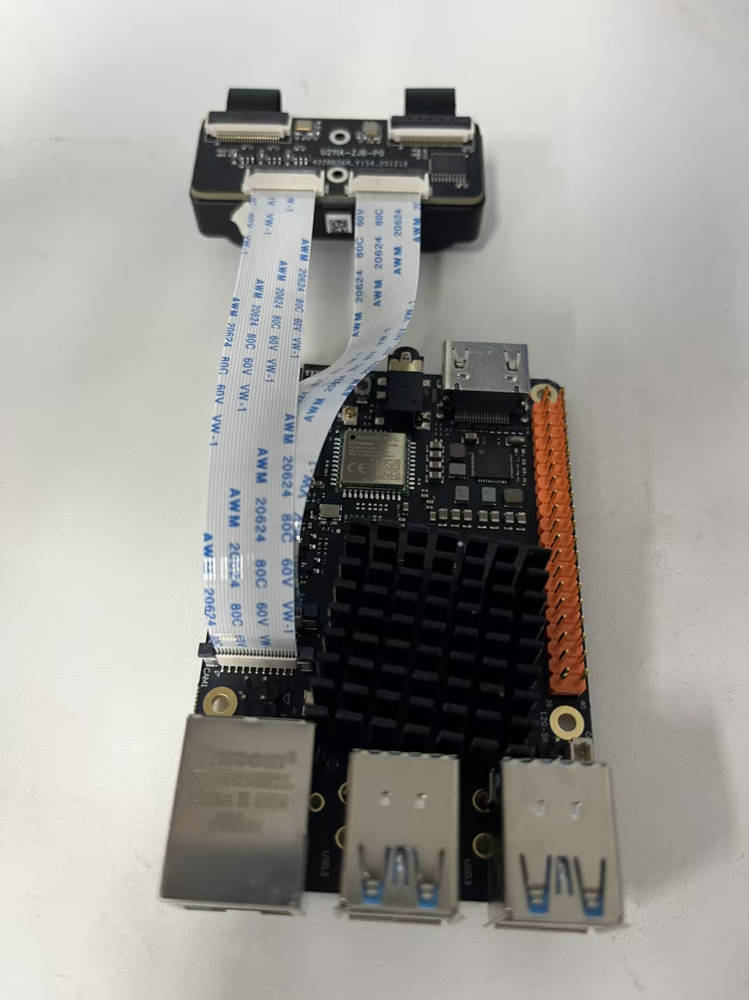
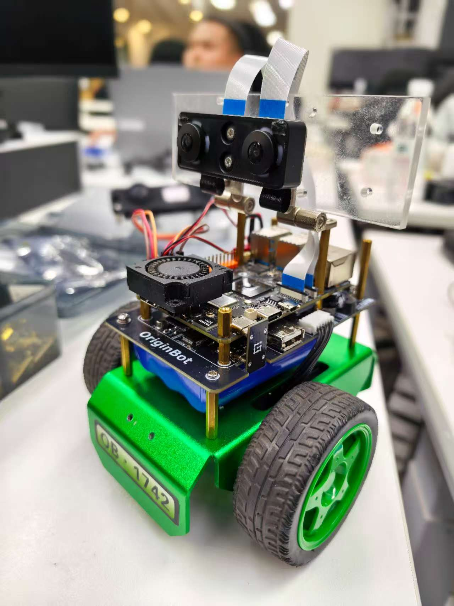
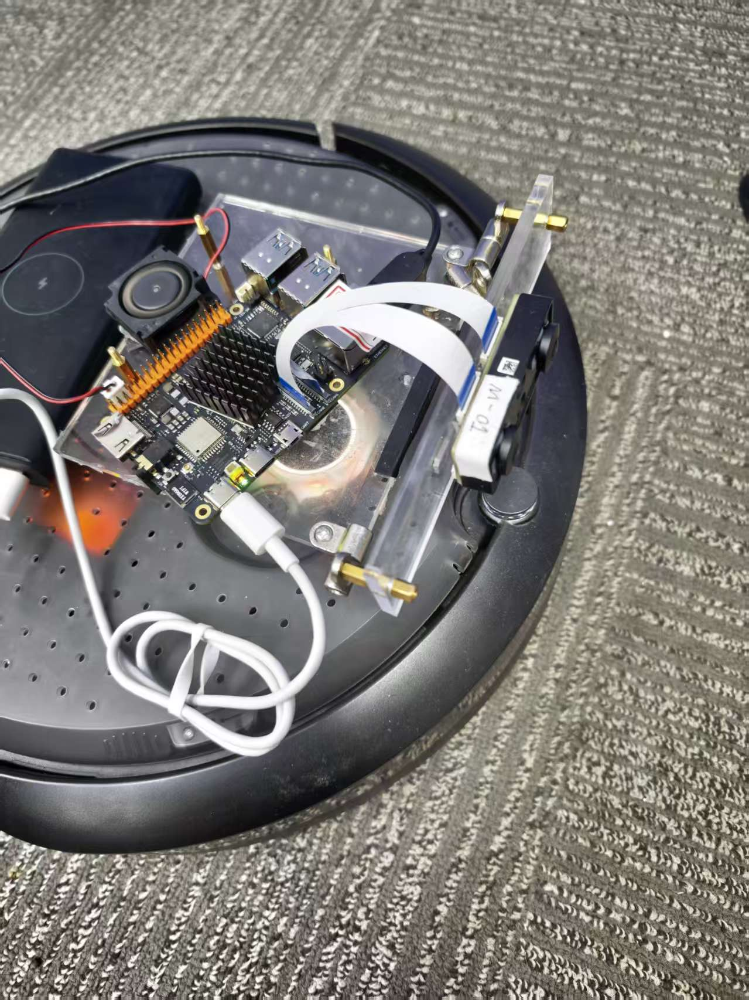

相机安装和配置手册
双目相机信息
| 名称 | 图片 | 资料链接 |
|---|---|---|
| SC132GS双目相机（70mm基线，带IMU） 型号：RDK Stereo Camera GS130WI |
 |
成品 规格书 尺寸图 |
| SC132GS双目相机（80mm基线） 型号：RDK Stereo Camera GS130W |
 |
点击查看 |
| SC132GS双目相机（35mm基线） 型号：RDK Stereo Camera GS130W |
 |
点击查看 |
安装双目相机
SC132GS双目相机安装在RDK X5上的示意图。
| 相机类型 | 相机和X5连接示意图 | 安装到OriginBot底盘 | 安装到Create3底盘 |
|---|---|---|---|
| 70mm基线（带IMU） |  |
 |
—— |
| 80mm基线 |  |
 |
 |
| 35mm基线 |  |
 |
 |
注意
- 70mm基线（带IMU）不需要设置图像旋转，即启动时指定mipi_rotation=0.0。
- 80mm以及其他基线（不带IMU）需要设置图像旋转，即启动时指定mipi_rotation=90.0。